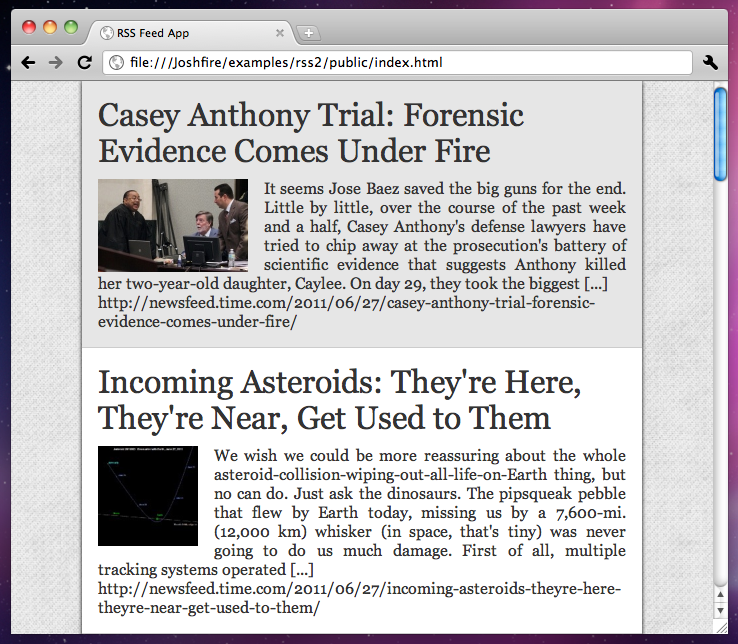

Now that we have seen how to build a basic application, we are going to refactor it and add data loading through Ajax request.
tree.ui.jsIn part 1, everything was embedded in app.js. This can get messy as the size of you application increases.
So we are going to move the UI Tree code in a file called src/tree.ui.js. This file will be used to describe all the UI elements of the application: it's the View of MVC.
// As UI Tree is now in an external file, we will include it as a module from app.js
Joshfire.define(['joshfire/class', 'joshfire/tree.ui', 'joshfire/uielements/list'],
function(Class, UITree, List) {
// We return an object that extends UITree (the base class of all UITree)
return Class(UITree, {
// buildTree gets called automaticaly by the constructor : it's there that we must place UI code
buildTree: function() {
return [
{
id: 'newsList', // internal id
type: List, // type of ui widget
orientation: 'left', // change navigations properties of the grid
dataPath: '/news/', // data which will be used to populate the list
itemInnerTemplate: // override default template for list items
'<div class="clearfix">'+
' <h1 class="title"><%= item.title %></h1>'+
' <img src="<%= item.image %>" />'+
' <div class="description"><%= item.description %></div>'+
'</div>'
}
];
}
});
});
So what did we do exactly ? Basically we took UI Tree code of part 1 and moved it in an external file.
The module in that file returns a class which extends UITree base class.
This class has a method buildTree which returns an array describing our UI : this is where the code we wrote previously fits in.
tree.data.jsAs we already moved the code of UI Tree, let's do the same with Data Tree. But this time, we are going to use an external feed to populate our list.
To simplify this process, we created a Yahoo Pipe to generate a JSONp output from an XML RSS Feed. If you wish to learn more on Yahoo Pipes, just go to http://pipes.yahoo.com/pipes/.
Joshfire.define(['joshfire/class', 'joshfire/tree.data', 'joshfire/vendor/underscore',
'joshfire/utils/datasource'], function(Class, DataTree, _, Datasource) {
// To perform external requests, we use the datasource.js util
// it is a wrapper arround builtin Ajax tool of every adapter
var datasource = new Datasource();
// We create a function that will handle data loading using our datasource
// rssUrl is the address of the RSS feed we wish to use
// callback if a function we need to call when we are finished
var rssToJson = function(rssUrl, callback) {
datasource.request({
url: 'http://pipes.yahoo.com/pipes/pipe.run?_id=4fa74022e5e07885dc8ec7fe498d34a4&_render=json&url='
+ escape(rssUrl) +'&_callback=?',
dataType: 'jsonp'
},
// Callback function: on error it will be called with the error as it first parameter
// on success the data will be passed as the second parameter
function(error, news) {
if (error) { return callback(error, null); }
callback(null, _.map(news.value.items,function(item,id) {
return _.extend(item, { id: id,
image: item.image.substr(0, item.image.length - 6) });
}));
});
};
// The process is rather similar to what we did with UITree, except that here we extend DataTree
return Class(DataTree, {
buildTree: function() {
return [
{
id: 'news',
// Instead of using static data, we provide a function which will handle data fetching
// the 'callback' parameter is a function we need to call when data loading is completed
// to notify the framework back
children: function(query, callback) {
rssToJson('http://newsfeed.time.com/feed/', callback);
}
}
];
}
});
});
Note: As you may have noticed, the prototype of framework callback function follows nodeJS convention.
app.jsLet's update the app.js file a bit.
Joshfire.define(['joshfire/app', 'joshfire/class', './tree.data', './tree.ui'],
function(BaseApp, Class, Data, UI) {
Joshfire.debug = true;
return Class(BaseApp, {
id: 'exampleRss',
// In part 1, we used 'uiTree' property to pass UI data directly
// now that we use a class, we use 'uiClass' so that it gets instanciated
uiClass: UI,
// The same apply for 'dataTree' - 'dataClass'
dataClass: Data,
// 'setup' is a method which gets called by the constructor of the class
setup: function(callback) {
var self = this;
// Here we subscribe to the event 'data' on UIElement '/newsList', which is our List
// this means that when data gets loaded in the UI Element, we get call back
self.ui.element('/newsList').subscribe('data', function(ev) {
// Here we force focus on the first element of our List
self.ui.moveTo('focus', '/newsList');
});
// As there are no asyncroneous task that we are waiting uppon, we call
// the framework callback directly
callback(null, true);
}
});
});
Run it!You can now launch the application in your browser, and it should look like this:
